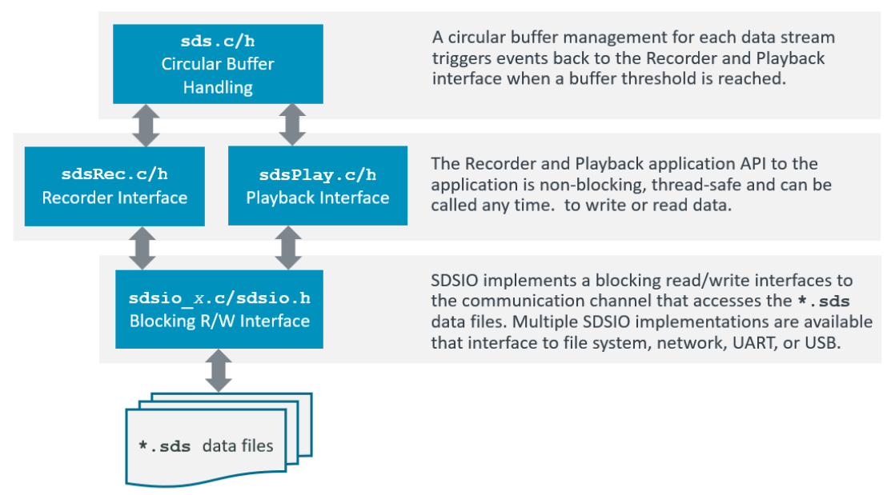
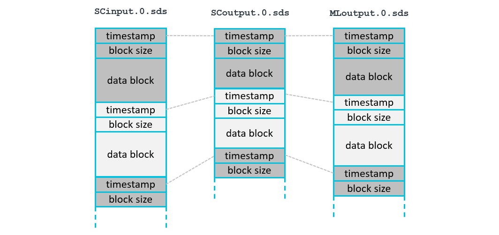
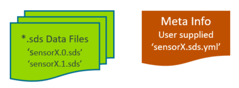

Theory of Operation
The SDS Framework enables to record and playback one or more data streams to an application that is under development as shown in the diagram below. With the SDSIO Interface the data streams are connected to SDS data files. The file storage can be either embedded within the system and access by a file system or external on a host computer and accessed by a communication interface such as Ethernet or USB.
The DSP or ML algorithms that are tested operate on blocks and are executed periodically. This documentation uses these terms:
- Data Block: is a set of input or output data which is processed in one step by a DSP or ML compute note.
- Block size: is the number of bytes of a data block.
- Interval: is the periodic time interval that the compute node executes.

The core of the SDS-Framework is a circular buffer handling (sds.c/h) that is controlled by the Recorder/Player interface functions (sdsRec.c/h/sdsPlay.c/h). This circular buffer is the queue for the file I/O communication (sdsio.c/h). Using the Recorder/Player functions, the data stream under development may read and write data streams as shown in the diagram above.

Usage
The following diagram shows the usage of the SDS Recorder and Player functions (executed in sdsRecPlayThread). The sdsControlThread controls the overall execution. AlgorithmThread is the thread that executes Signal Conditioning (SC) and ML Model.
SDS Data Files
Each data stream is stored in a separate SDS data file. In the diagram below SCinput.0.sds is the input to Signal Conditioning, SCoutput.0.sds is the output of Signal Conditioning, and MLoutput.0.sds is the output of the ML Model. Each execution of the algorithm is represented in a data block with a timestamp. The timestamp allows to correlate the blocks of different streams. In the above example, all blocks of one algorithm execution have the same timestamp value.

- Each call to the function
sdsRecWritewrites one data block. - Each call to the function
sdsPlayReadreads one data block.
Filenames
SDS data filenames use the following file format: <name>.<file-index>.sds. <name> is the base file name of the SDS data file. The <file-index> is a sequential number starting from 0.
-
The function
sdsRecOpengets the<name>as a parameter. When connected to a file system (for example the SDSIO-Server), existing files starting with<file-index>="0"are iterated. The first available<file-index>that does not exist will used as filename to record data. For example, if the fileSensorX.10.sdsalready exists, the filenameSensorX.11.sdswill be used. -
The function
sdsPlayOpengets the<name>as a parameter. When connected to a file system (for example using the SDSIO-Server), the first call uses the<file-index>="0". Each call tosdsPlayOpenincrements the<file-index>.
Timestamp
The timestamp is a 32-bit unsigned value and is used for:
- Alignment of different data streams that have the same timestamp value.
- Order of the SDS data files captured during execution.
- Combining multiple SDS file records with the same timestamp value.
The same timestamp connects different SDS file records. It is therefore useful to use the same timestamp for the recording of one iteration of a DSP or ML algorithm. In most cases the granularity of an RTOS tick (typically 1ms) is a good choice for a timestamp value.
File Format
The SDS Framework uses a binary data file format to store the individual data streams. It supports the recording and playback of multiple data streams that may have jitters. Therefore each stream contains timestamp information that allows to correlate the data streams as it is for example required in a sensor fusion application.
The binary data format (stored in *.<n>.sds data files) has a record structure with a variable size. Each record has the following format:
- timestamp: record timestamp in tick-frequency (32-bit unsigned integer, little endian)
- data size: number of data bytes in the record (32-bit unsigned integer, little endian)
- binary data: SDS stream (little endian, no padding) as described with the
*.sds.ymlfile.
YAML Metadata Format
The content of each data stream may be described in a YAML metadata file that is created by the user. The following section defines the YAML format of this metadata file. The file sds.schema.json is a schema description of the SDS Format Description.
sds: |
Start of the SDS Format Description |
|---|---|
name: |
Name of the Synchronous Data Stream (SDS) |
description: |
Additional descriptive text (optional) |
frequency: |
Capture frequency of the SDS |
tick-frequency: |
Tick frequency of the timestamp value (optional); default: 1000 for 1 milli-second interval |
content: |
List of values captured (see below) |
content: |
List of values captured (in the order of the data file) |
|---|---|
- value: |
Name of the value |
type: |
Data type of the value |
offset: |
Offset of the value (optional); default: 0 |
scale: |
Scale factor of the value (optional); default: 1.0 |
unit: |
Physical unit of the value (optional); default: no units |
Example
This example defines a data stream with the name "sensorX" that contains the values of a gyroscope, temperature sensor, and additional raw data (that are not further described).

The binary data that are coming form this sensors are stored in data files with the following file format: <sensor-name>.<file-index>.sds. In this example the files names could be:
sensorX.0.sds # capture 0
sensorX.1.sds # capture 1
The following sensorX.sds.yml provides the format description of the SDS sensorX binary data files and maybe used by data conversion utilities and data viewers.
sds: # describes a synchronous data stream
name: sensorX # user defined name
description: Gyroscope stream with 1KHz, plus additional user data
frequency: 1000
content:
- value: x # Value name is 'x'
type: uint16_t # stored using a 16-bit unsigned int
scale: 0.2 # value is scaled by 0.2
unit: dps # base unit of the value
- value: y
type: uint16_t
scale: 0.2
unit: dps
- value: z
type: uint16_t
unit: dps # scale 1.0 is default
- value: temp
type: float
unit: degree Celsius
- value: raw
type: uint16_t # raw data, no scale or unit given
- value: flag
type: uint32_t:1 # a single bit stored in a 32-bit int
Code Example
The following code snippets show the usage of the Recorder Interface. In this case an accelerometer data stream is recorded.
// *** variable definitions ***
struct { // sensor data stream format
uint16_t x;
uint16_t y;
uint16_t z;
} accelerometer [30]; // number of samples in one data stream record
sdsRecId_t *accel_id, // data stream id
uint8_t accel_buf[(sizeof(accel_buf)*2)+0x800]; // data stream buffer for circular buffer handling
:
// *** function calls ***
sdsRecInit(NULL); // init SDS Recorder
:
// open data stream for recording
accel_id = sdsRecOpen("Accel", accel_buf, sizeof(accel_buf), 2*(sizeof(accelerometer));
:
// write data in accelerometer buffer with timestamp from RTOS kernel.
timestamp = osKernelGetTickCount();
n = sdsRecWrite(accel_id, timestamp, accelerometer, sizeof(accelerometer));
if (n != sizeof(accelerometer)) {
... // unexpected size returned, error handling
}
:
sdsRecClose (accel_id); // close data stream
Buffer Size
The size of the data stream buffer depends on several factors such as:
- the communication interface technology that may impose specific buffer size requirements to maximize data transfer rates.
- the frequency of the algorithm execution. Fast execution speeds may require a larger buffer.
A a guideline, the buffer size should be 2 times the block size + 2KB. As a minimum 0x1000 (4 KB) is recommended.
SDSIO Server Protocol
The SDSIO Server uses a simple protocol for data exchange between a Host computer and the embedded target that integrates an SDSIO Interface. The protocol assumes that the correct communication to the server is already ensured by the underlying technology (TCP/IP or USB) and therefore no extra check is implemented.
The following conventions describe the command semantic used in the following documentation"
| Symbol | Description |
|---|---|
| > | Prefix indicating the direction: Command from target to Host. |
| < | Prefix indicating the direction: Response from Host to target. |
| WORD | 32-bit value (low byte first). |
| **** | The field above has exactly one occurrence. |
| ++++ | The field above has a variable length. |
Commands:
Commands are send from the embedded target to the Host computer that is running the SDSIO Server.
| ID | Name | Description |
|---|---|---|
| 1 | SDSIO_CMD_OPEN | Open a SDS data file |
| 2 | SDSIO_CMD_CLOSE | Close a SDS data file |
| 3 | SDSIO_CMD_WRITE | Write to SDS data file |
| 4 | SDSIO_CMD_READ | Read from SDS data file |
| 5 | SDSIO_CMD_EOS | End of Stream |
Each Command starts with a Header (4 Words) and optional data with variable length. Depending on the Command, the SDSIO Server replies with a Response that repeats the Header and delivers additional data.
SDSIO_CMD_OPEN
The Command ID=1 SDSIO_CMD_OPEN opens an SDS data file on the Host computer.
SDS data filenames use the following file format: <name>.<file-index>.sds. Name is the base file name of the SDS data file. Len of Name is the size of the string in bytes. <file-index> is a sequential number starting from 0.
Mode defines read (value=0) or write (value=1) operation. For write, the server inserts the next available <file-index> number that does not exist yet (if Name.3.sds exists, the server creates Name.4.sds). For read the server maintains a list of Names that where previously used. When a Name was not used before it opens <file-index>=0, i.e. Name.0.sds.
| WORD | WORD **| WORD | WORD *******|++++++|
> 1 | 0 | Mode | Len of Name | Name |
|******|********|******|*************|++++++|
The Response ID=1 SDSIO_CMD_OPEN provides a Handle that is used to identify the file in subsequent commands.
| WORD | WORD **| WORD | WORD *******|
< 1 | Handle | Mode | 0 |
|******|********|******|*************|
SDSIO_CMD_CLOSE
The Command ID=2 SDSIO_CMD_CLOSE closes an SDS data file on the Host computer. The Handle is the identifier obtained with SDSIO_CMD_OPEN. There is no Response from the SDSIO Server on this command.
| WORD | WORD | WORD | WORD |
> 2 | Handle | 0 | 0 |
|******|********|******|******|
SDSIO_CMD_WRITE
The Command ID=3 SDSIO_CMD_WRITE writes data to an SDS data file on the Host computer. The Handle is the identifier obtained with SDSIO_CMD_OPEN. Size is the Data size in bytes. There is no Response from the SDSIO Server on this command.
| WORD | WORD | WORD | WORD |++++++|
> 3 | Handle | 0 | Size | Data |
|******|********|******|******|++++++|
SDSIO_CMD_READ
The Command ID=4 SDSIO_CMD_READ reads data from an SDS data file on the Host computer. The Handle is the identifier obtained with SDSIO_CMD_OPEN. Size are the number of bytes that should be read.
| WORD | WORD | WORD | WORD |
> 4 | Handle | Size | 0 |
|******|********|******|******|
The Response ID=4 SDSIO_CMD_READ provides the data read from an SDS data file on the HOST computer.
Size is the Data size in bytes that is read.
| WORD | WORD | WORD | WORD |++++++|
< 4 | Handle | 0 | Size | Data |
|******|********|******|******|++++++|
SDSIO_CMD_EOS
The Command ID=5 SDSIO_CMD_EOS checks if the end of file is reached. The Handle is the identifier obtained with SDSIO_CMD_OPEN.
| WORD | WORD | WORD | WORD |
> 5 | Handle | 0 | 0 |
|******|********|******|******|
The Response ID=5 SDSIO_CMD_EOS returs the Status with nonzero = end of stream, else 0
| WORD | WORD | WORD | WORD |
< 5 | Handle | Status | 0 |
|******|********|********|******|
ToDo: I don't understand why this command is needed as SDSIO_CMD_READ returns indirectly this status already. Also the nonzero above needs work.
SDSIO Message Sequence
This is the message sequence of the SDS DataTest example when connected to MDK-Middleware Ethernet. It contains the following threads that executes on the target.
- Control: Overall execution Control
- Algorithm: Algorithm under test
- Recorder: SDS Recorder thread (sdsRecThread)
- Playback: SDS Playback thread (sdsPlayThread)
The Server is the SDSIO Server executing on the target system.
ToDo rework this diagram
ToDo:
- create similar diagram for Playback
- should Playback and Record use the same Thread?
- How is the buffer filled on PlayOpen?
- document control blocks in sds.c, sds_rec.c, and sds_play.c (comments might be sufficient)
How does Threshold work?
- when Threshold is reach, the write operation writes the whole buffer. The transport layer (TCP/IP) may need to split this into multiple packs. Should size be optimized for transport layer?
- This writes all buffers https://github.com/ARM-software/SDS-Framework/blob/main/sds/source/sds_rec.c#L157 until empty. When Recorder is same priority as Algorithm, Algorithm might not be executed for quite a while.
sds.c generates detailed events (are they documented?) but sds_rec.c does not really use this information
- Threshold event is only set when complete write was possible, is this correct? https://github.com/ARM-software/SDS-Framework/blob/main/sds/source/sds_rec.c#L298
ToDo review this section
Guidelines for Stream Buffer sizing and Threshold settings
Overview
The SDS Recorder/Player uses memory buffers to manage data recording and playback efficiently. Proper buffer and threshold configurations optimize performance by balancing data production, consumption, and system resource utilization.
Stream Buffer Size
The size of memory buffers affects the balance between data production and consumption.
The absolute minimum stream buffer size should be large enough to store one maximum record along with its header (8 bytes).
The recommended stream buffer size should be large enough to store at least two maximum records along with headers (8 bytes per record) and can be rounded up for convenience.
The record size generally corresponds to the data size used by the underlying technology. For example, in typical ML applications, the record size should ideally match the data slice required by the DSP process.
If sufficient RAM is available, increasing the buffer size can improve performance.
Threshold Settings for SDS Recorder/Player
Function of Thresholds
- For the SDS Recorder: Determines when data writing to the I/O begins.
- For the SDS Player: Determines when data reading from the I/O begins.
The recommended threshold setting is half of the stream buffer size, enabling a double-buffering technique where one half of the buffer is transferred while the other half continues to fill or be consumed.
A well-optimized system ensures timely data transfer over the I/O:
- For the Recorder: Previously acquired data must be transferred before the remaining of the buffer fills with new data.
- For the Player: New playback data should be transferred before the previously transferred playback data is consumed.
Impact on System Performance
The threshold setting directly affects system performance, as I/O transfers temporarily occupy the CPU. During these operations, other system processes may experience limited CPU availability.
If the system requires additional CPU resources for other tasks, adjustments can be made by:
- Increasing the priority of critical threads.
- Reducing the threshold setting, which shortens the duration of each transfer but increases the frequency of transfers.
Note
- Thresholds operate based on discrete record sizes. A threshold is only triggered when a write or read operation surpasses (for write) or falls below (for read) the set limit.
- When handling large records, breaking them into smaller chunks may be necessary to optimize system performance.
Additional Settings Affecting I/O Bandwidth
Several additional factors influence I/O bandwidth, including:
- Temporary Recorder/Player buffer size (configured in the
sds_rec_config.h/sds_play_config.hfiles). - I/O low-level buffering.
Optimizing I/O Buffering
For optimal performance, the temporary Recorder/Player buffer size should match the I/O low-level buffer size.
For some interfaces, the I/O low-level buffer size can be configurable, for others, it is fixed.
Example: The USB Virtual COM interface allows I/O low-level buffer size configuration. It is recommended to set this buffer size as a multiple of the bulk endpoint maximum packet size (512 bytes for USB high-speed connections).
Example configurations for typical ML use cases
| ML Use Case | DSP slice | Calculation | Buffer Size | Threshold |
|---|---|---|---|---|
| Motion detection | 125 accelerometer samples | 2 × [(125 samples × 3 axes × 4 bytes per axis) + 8] = 3016 -> rounded to 3072 |
3072 bytes | 1536 |
| Keyword spotting | 250 ms of audio data samples (16kHz) | 2 × [(4,000 audio samples × 4 bytes per sample) + 8] = 32,016 -> rounded to 32,768 |
32768 bytes | 16384 |
| Object detection | 1 picture (320x320) | 2 × [(320 × 320 pixels × 4 bytes per pixel) + 8] = 819,216 |
819216 bytes | 409608 |
Best Practices Summary
-
Ensure buffer sizes align with DSP ata slice sizes for efficient ML processing.
-
Use double-buffering to enhance I/O efficiency.
-
Adjust threshold settings to balance performance and CPU usage.
-
Match temporary buffer sizes to I/O low-level buffer sizes where possible.
By following these guidelines, the SDS Recorder/Player can be configured efficiently to balance performance, latency, and CPU utilization, ensuring smooth data processing and system stability.